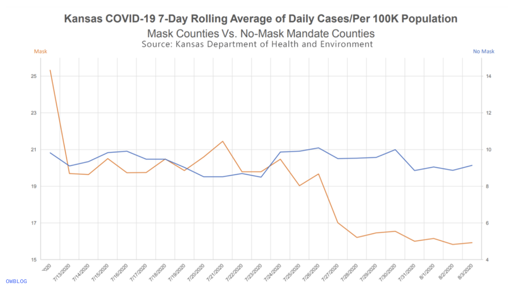

Lab 07 - Conveying the right message through visualisation
Created 2/24/2025
Link to assignment: https://datascience4psych.github.io/DataScience4Psych/lab07.html
Link to archived assignment: https://web.archive.org/web/20250414135251/https://datascience4psych.github.io/DataScience4Psych/lab07.html#learning-goals-2
Assignment Details
In this lab, our goal is to reconstruct and improve a data visualization concerning COVID-19 and mask-wearing practices. We aim to explore how data visualizations can sometimes mislead and learn techniques to correct these misrepresentations.
The following visualization was shared on Twitter as “extraordinary misleading”.

### Create Kansas COVID Data
Kansas_Mask <- tribble(
~date, ~count, ~mask_status,
"7/12", 25.5, "mask",
"7/13", 19.8, "mask",
"7/14", 19.7, "mask",
"7/15", 20.5, "mask",
"7/16", 19.8, "mask",
"7/17", 19.8, "mask",
"7/18", 20.5, "mask",
"7/19", 20, "mask",
"7/20", 20.7, "mask",
"7/21", 21.3, "mask",
"7/22", 19.8, "mask",
"7/23", 19.8, "mask",
"7/24", 20.5, "mask",
"7/25", 19, "mask",
"7/26", 19.5, "mask",
"7/27", 17, "mask",
"7/28", 16.3, "mask",
"7/29", 16.5, "mask",
"7/30", 16.7, "mask",
"7/31", 16, "mask",
"8/01", 16.3, "mask",
"8/02", 15.8, "mask",
"8/03", 16, "mask",
"7/12", 9.8, "no mask",
"7/13", 9.2, "no mask",
"7/14", 9.5, "no mask",
"7/15", 9.8, "no mask",
"7/16", 9.9, "no mask",
"7/17", 9.6, "no mask",
"7/18", 9.55, "no mask",
"7/19", 9, "no mask",
"7/20", 8.4, "no mask",
"7/21", 8.4, "no mask",
"7/22", 8.6, "no mask",
"7/23", 8.3, "no mask",
"7/24", 9.8, "no mask",
"7/25", 9.9, "no mask",
"7/26", 10.1, "no mask",
"7/27", 9.6, "no mask",
"7/28", 9.6, "no mask",
"7/29", 9.65, "no mask",
"7/30", 10, "no mask",
"7/31", 8.7, "no mask",
"8/01", 9, "no mask",
"8/02", 8.7, "no mask",
"8/03", 9.2, "no mask",
)
Kansas_Mask## # A tibble: 46 × 3
## date count mask_status
## <chr> <dbl> <chr>
## 1 7/12 25.5 mask
## 2 7/13 19.8 mask
## 3 7/14 19.7 mask
## 4 7/15 20.5 mask
## 5 7/16 19.8 mask
## 6 7/17 19.8 mask
## 7 7/18 20.5 mask
## 8 7/19 20 mask
## 9 7/20 20.7 mask
## 10 7/21 21.3 mask
## # ℹ 36 more rowsCreate a better Kansas COVID Visual
Kansas_Mask %>%
ggplot(aes(
x = date,
y = count,
group = mask_status
))+
geom_line(aes(color = mask_status))+
theme_minimal()+
scale_color_manual(values=c("blue", "red"))+
labs(
x = "Date",
y = "Average daily cases per 100k",
title = "Kansas COVID-19 7-day rolling average in 2020",
subtitle = "Mask Counties vs No-Mask Mandate Counties",
color = "Mask status"
)+
theme(axis.text.x = element_text(angle = 45, vjust = 0.5, hjust=.5))
What is more clear from this visualization is the huge difference in number of cases. It’s harder to see the drop in cases after mid July. From the visualization (and assuming I read the original graph correctly), it looks like places that don’t enforce masks have overall lower rates of COVID cases than places that mandate masks. This seems wrong based on my prior knowledge.
The key factors that help this visualization is the accurate scaling of the y axis. Seeing the space between the two graphs shows the clear difference no mandate makes.
To show the reverse, I would make sure that both graphs were on different scales, masking the true effect (see what I did there?) and highlighting the downward trend for masking counties and variability of the no mask counties.
Second Visualization
Kansas_Mask %>%
ggplot( aes(
x = date,
y = count,
group = mask_status,
color = mask_status
))+
facet_wrap(~mask_status, scales = "free")+
scale_color_manual(values = c("green4","red")) +
geom_line()+
theme_bw()+
labs(
x = "Date",
y = "Average daily cases per 100k",
title = "Kansas COVID-19 7-day rolling average in 2020",
subtitle = "Mask Counties vs No-Mask Mandate Counties",
color = "Mask status"
)+
theme(axis.text.x = element_text(angle = 45, vjust = 0.5, hjust=.5, size = 8))
This is just one way to change the visual of the data to suggest a no mask policy. By using facet_wrap() and set the scales to free, I was able to change how the data looks. I kept the same shape of the mask condition, showing a downward trend of COVID cases over time. In the no mask, condition, it now appears that there is a lot of daily variation in the COVID cases, suggesting that not wearing masks will cause unknown effects. This is also a silly edit, but the red and green on the graph subconsciously signal good and bad to the viewer.
Other Options
True_Kansas <- Kansas_Mask %>%
mutate (true_count = Kansas_Mask$count * 100000)
True_Kansas %>%
ggplot(aes(
x = date,
y = true_count,
group = mask_status
))+
geom_line(aes(color = mask_status))+
theme_minimal()+
scale_color_manual(values=c("blue", "red"))+
labs(
x = "Date",
y = "Average daily cases per 100k",
title = "Kansas COVID-19 7-day rolling average in 2020",
subtitle = "Mask Counties vs No-Mask Mandate Counties",
color = "Mask status"
)+
theme(axis.text.x = element_text(angle = 45, vjust = 0.5, hjust=.5))+
coord_cartesian(ylim = c(0, 2556000))
This graph can be used to remind people that COVID cases are still prevalent in the no-mask counties.
Kansas_Mask %>%
ggplot( aes(
x = date,
y = count,
group = mask_status,
color = mask_status
))+
facet_wrap(~mask_status, scales = "free")+
scale_color_manual(values = c("green4","red")) +
geom_line()+
theme_bw()+
labs(
x = "Date",
y = "Average daily cases",
title = "Kansas COVID-19 7-day rolling average in 2020",
subtitle = "Mask Counties vs No-Mask Mandate Counties",
color = "Mask status",
caption = "Cases reported per 100k"
)+
theme(axis.text.x = element_text(angle = 45, vjust = 0.5, hjust=.5, size = 8),
axis.text.y = element_blank(),
axis.ticks.y = element_blank())
We can also drop the y axis entirely to further change the data. This way we further push the daily changes as the most important feature instead of the actual number of cases.